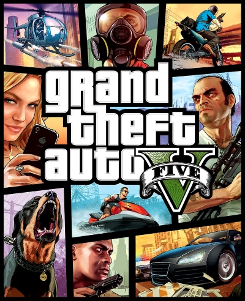
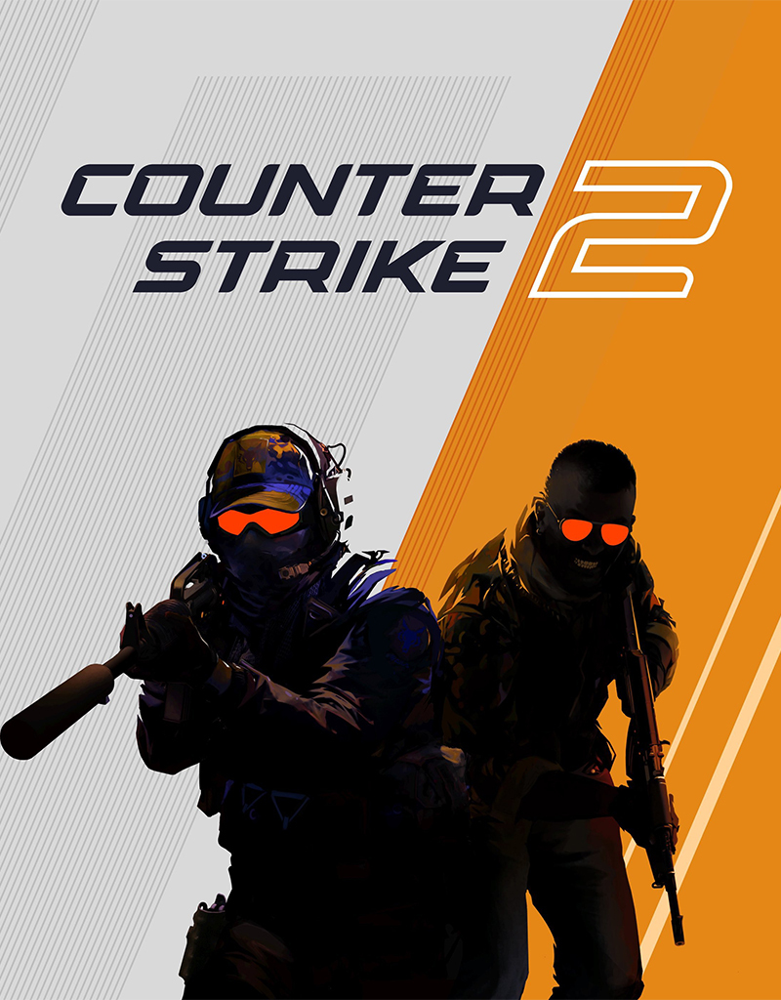
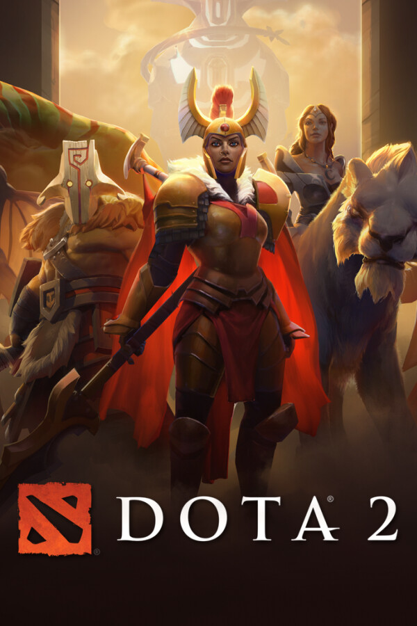
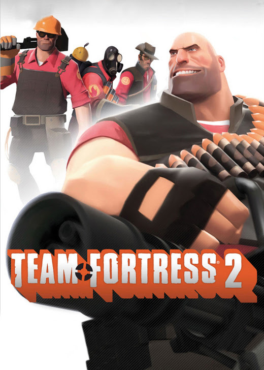

- 5 декабря 2023 года Rockstar Games официально анонсировала Grand Theft Auto 6.
- Действие игры разворачивается в современном Вайс-Сити.
- В игре появится как минимум один персонаж из пятой GTA.

- Grand Theft Auto V — это приключенческий экшен с видом от третьего лица[англ.].
- Чтобы продвигаться по сюжету, игроку необходимо проходить миссии, всего в игре 69 основных (сюжетных) миссий и 58 побочных.
- Местом действия Grand Theft Auto V стал вымышленный город Лос-Сантос (англ. Los Santos), прототипом которого является Лос-Анджелес. Лос-Сантос впервые появился в одной из предыдущих игр серии — Grand Theft Auto: San Andreas, вышедшей в 2004 году.

- Как и предыдущие игры серии, Counter-Strike 2 — это многопользовательский тактический шутер от первого лица, в котором две команды соревнуются за выполнение различных задач в зависимости от выбранного режима игры.
- В игре есть шесть различных игровых режимов, в которых игроки могут соревноваться: соревновательный, премьер-режим, обычный, напарники, бой насмерть, гонка вооружений.
- В Counter-Strike 2 разработчики отказались от кругового меню покупки оружия из Global Offensive. Вместо него в игре появилось новое плоское меню, ключевой особенностью которого является возможность продажи купленного оружия.

- Dota 2 — многопользовательская командная компьютерная игра в жанре MOBA, разработанная и изданная корпорацией Valve.
- Разработка игры началась в 2009 году, когда компания Valve приняла на работу основного разработчика DotA — IceFrog, а летом 2010 года подала заявку на регистрацию этой торговой марки.
- Изначально Dota 2 была выпущена на игровом движке Source, после чего в 2015 году была портирована на Source 2, став первой работающей на нём игрой.

- Team Fortress 2 (сокр. TF2) — компьютерная игра в жанре многопользовательского шутера от первого лица, разработанная и изданная компанией Valve Corporation.
- Игра, служащая сиквелом к модификации Team Fortress под Quake и ремейку последней — модификации Team Fortress Classic под Half-Life, была анонсирована в 1998 году, причём концепция и дизайн проекта на протяжении последующих девяти лет, составивших время его разработки, существенно изменились.
- При выходе игра была хорошо воспринята критиками; высокие оценки получили визуальный стиль, структура геймплея, характе́рный юмор и специфика персонажей в мире многопользовательской игры.
